10 部片单 · 恐怖 / 科幻 / 惊悚 / 悬疑 / 剧情
| # | 片名 | 类型 | 评分 / 状态 |
|---|---|---|---|
| 01 | 人工智能 | 科幻 / 剧情（美国 · 一个被写死的程序） | 8.7 / 76% / 65 |
| 02 | 狗镇 | 剧情 / 悬疑（丹麦 · 一块没有墙的布景） | 8.6 / 70% / 61 |
| 03 | 夜行者 | 惊悚 / 悬疑（美国 · 洛杉矶的夜最亮） | 8.4 / 95% / 76 |
| 04 | 边境杀手 | 惊悚 / 剧情（美国 / 墨西哥 · 那条看不见的线） | 7.6 / 91% / 82 |
| 05 | 黑夜造访 | 恐怖 / 惊悚（美国 · 一扇不能开的门） | 6.2 / 88% / 78 |
| 06 | 升级 | 科幻 / 惊悚（澳大利亚 · 装进脊椎里的那个声音） | 7.5 / 88% / 67 |
| 07 | 边境 | 悬疑 / 惊悚（瑞典 · 她闻得出谁心虚） | 7.0 / 97% / 75 |
| 08 | 夜间小屋 | 恐怖 / 悬疑（美国 · 他留下的那张图纸） | 6.5 / 86% / 68 |
| 09 | 坠落 | 惊悚（美国 / 英国 · 六百米的梯子） | 7.1 / 79% / 62 |
| 10 | 涉过愤怒的海 | 剧情 / 惊悚（中国 · 十七刀） | 7.8 / 9.2 / 9.3 |
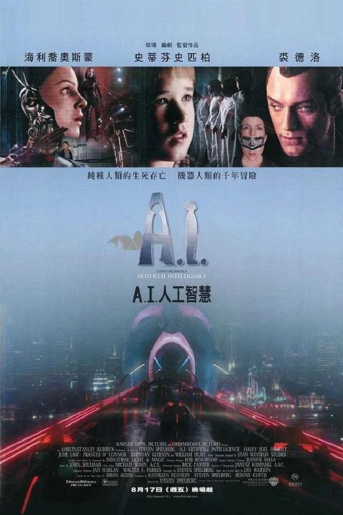
人工智能 A.I. Artificial Intelligence
「大卫十一岁，体重六十磅，身高四英尺六英寸，棕色头发。他的爱是真的，但他不是。」
剧情梗概
温室效应让海岸线沉没，人类用机器人填补了空缺。赛博创世纪公司造出了第一个会爱的机器人男孩大卫，把他交到员工亨利与莫妮卡家里试用。他们的亲生儿子出事之后，莫妮卡启动了那个「印记」程序——大卫有了一个母亲，也因此失去了她。他带着一只机器泰迪出发去找蓝仙女，想变成一个真的男孩。
亮点
- 这个项目原本属于库布里克：他从 1970 年代起筹备，1999 年去世后由斯皮尔伯格接手，最终剧本由斯皮尔伯格自己写。
- 第 74 届奥斯卡两项提名（原创配乐、视觉效果）；海利·乔·奥斯蒙出场时 13 岁，两年前凭《第六感》提名过影帝。
- 约翰·威廉姆斯的配乐把童话和机器混在一起，是全片最没有争议的部分。
- 当年最大的批评是「太甜」——库布里克的冷与斯皮尔伯格的暖被放进同一部片，评价两极。
- 罗杰·艾伯特在 2011 年把它补进了自己的「伟大电影」名单，等于公开改口。
- 豆瓣 8.7 / IMDb 7.2，但烂番茄 76%、Metacritic 65：典型的「观众远高于影评人」。
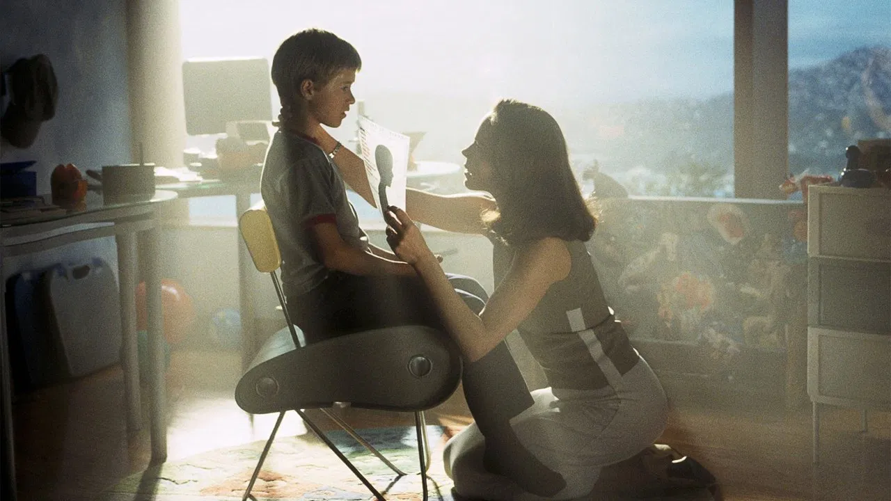
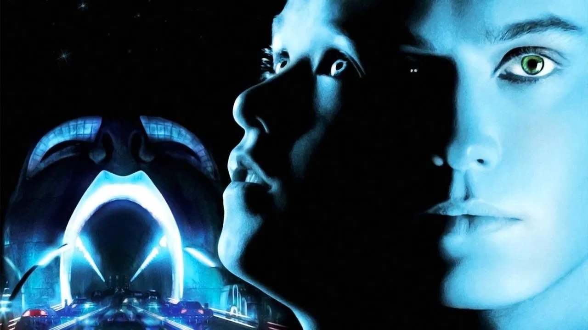
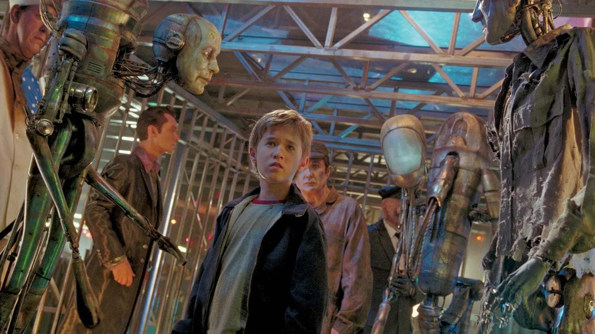
导演与主创 · 他们的历史作品

 侏罗纪公园
侏罗纪公园 辛德勒的名单
辛德勒的名单 拯救大兵瑞恩
拯救大兵瑞恩 猫鼠游戏
猫鼠游戏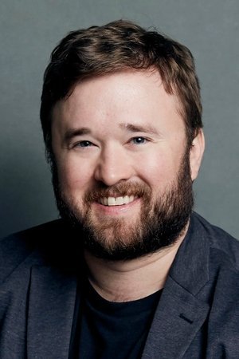
 第六感
第六感 阿甘正传
阿甘正传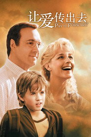
让爱传出去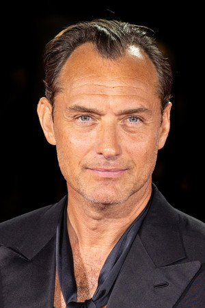
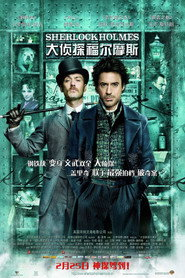
大侦探福尔摩斯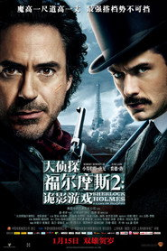
大侦探福尔摩斯2：诡影游戏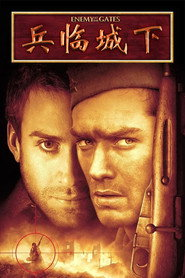
兵临城下短评（轻微剧透）
轻微剧透：真正的转折在海底那两千年。他被人类之后的存在从冰里挖出来，给他复刻了一个母亲和一天时间——那一天的温度全靠他自己的愿望维持。这二十多分钟的终章是斯皮尔伯格最不被承认的一次冒险：他把「被爱的权利」拍成了一个只能撑二十四小时的设定。前两小时是童话，这里是墓志铭。很多人不喜欢这段，但它正是这部片敢的地方。
为什么值得一看
想看「斯皮尔伯格最不像斯皮尔伯格」的一次的人；能接受情绪直给、中段略长的观众（146 分钟）。含轻度暴力与惊吓，儿童观看基本无碍。内地未引进，流媒体可看。看完想继续：《银翼杀手2049》《机器管家》《她》。
狗镇 Dogville
「你原谅他们，是因为你觉得自己比他们好。」
剧情梗概
逃亡的女人格蕾丝躲进洛基山脉深处一个叫狗镇的小村子。写东西的汤姆提议村民「收留」她，条件是她用劳动偿还。村民勉强同意了。工作量一点点加码，态度一点点变坏，而格蕾丝一直在说服自己：这是人之常情。
亮点
- 拉斯·冯·提尔「美国三部曲」第一部（其后是《曼德勒》），他同时也是「道格玛 95」宣言的发起人之一。
- 全片在一个摄影棚里完成：地面用白线画出房屋与街道，没有墙，观众能看见所有人「在场」。
- 妮可·基德曼主演——这是冯·提尔第一次用好莱坞一线明星。
- 约翰·赫特担任旁白，全片分九章，像在读一本小说。
- 成本约 1000 万美元，入围第 56 届戛纳主竞赛，当年现场评价极其分裂。
- 豆瓣 8.6 / IMDb 8.0，但烂番茄只有 70%、Metacritic 61：最常见的批评是「说教」。
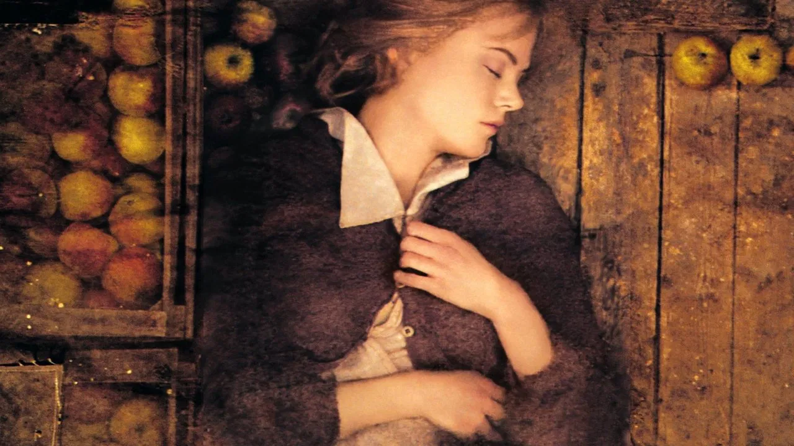
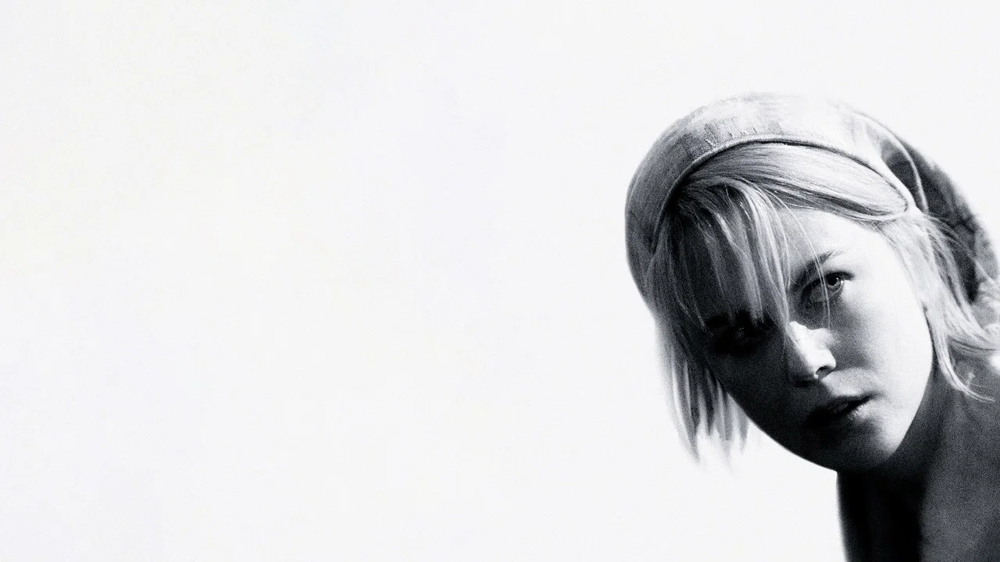
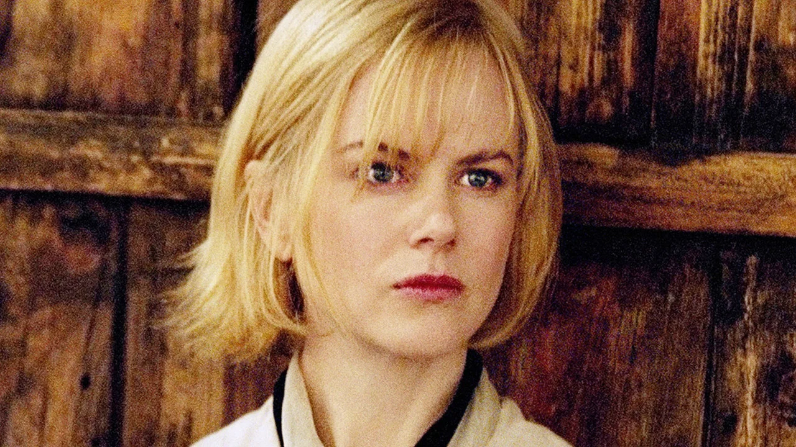
导演与主创 · 他们的历史作品
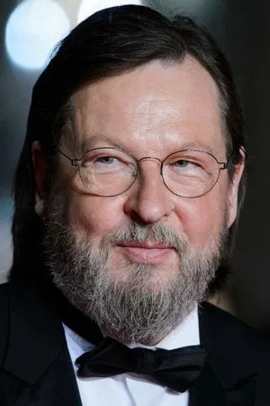
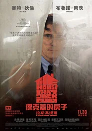
此房是我造
 小岛惊魂
小岛惊魂 大开眼戒
大开眼戒 海王
海王 北欧人
北欧人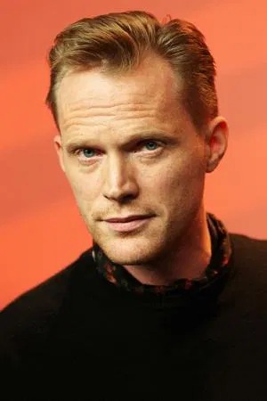
 复仇者联盟
复仇者联盟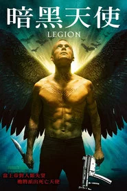
基督再临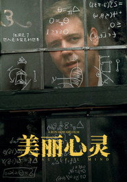
美丽心灵 美国队长3
美国队长3短评（轻微剧透）
轻微剧透：真正的转折不在村民变坏，在格蕾丝最后点头。汤姆把她的宽容当成证据，说她之所以一直原谅，是因为她觉得自己高于这里所有人——这句话说完，纸条就被递到了她父亲手里。冯·提尔把结局做成了一次彻底的清算，很多观众在这一段下车。可以同意最后二十分钟用力过猛，但前半程那套「看得见的墙」确实是近二十年最有想法的舞台化处理：所有人知道所有人在干什么，这才是最冷的地方。
为什么值得一看
想看「电影还能这样拍」的人；能接受舞台化布景、章回体叙事与冷酷结局的观众。含暴力、羞辱与性侵场面，心理冲击强，建议成年观看，178 分钟。内地未映。看完想继续：《曼德勒》《破浪》《此房是我造》。
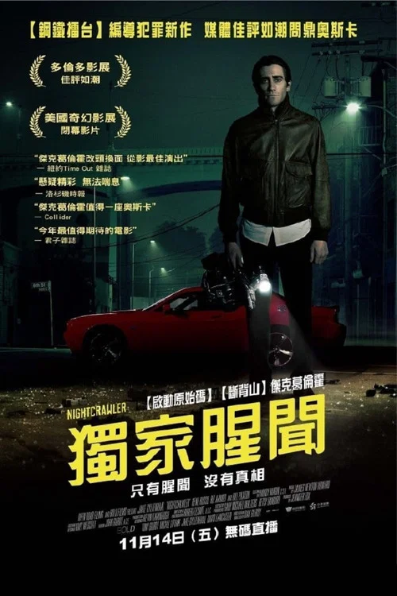
夜行者 Nightcrawler
「这座城市的夜晚最亮。」
剧情梗概
卢·布卢姆靠偷工地护栏过活。一次偶然，他看见有人扛着摄像机在车祸现场拍——这个行当叫「自由摄像」。他弄来一台摄像机和一台警用电台，开始拍洛杉矶的夜：火灾、入室、车祸，然后把带子卖给早间新闻。电视台的早间制片妮娜告诉他什么样的素材有人买，他学得很快。
亮点
- 丹·吉尔罗伊的长片处女作（此前他写《铁甲钢拳》《谍影重重4》），第 87 届奥斯卡最佳原创剧本提名。
- 杰克·吉伦哈尔为这个角色减重约 9 公斤，并兼任制片。
- 洛杉矶夜景大部分靠车灯与霓虹打出来，摄影罗伯特·艾尔斯维特，几乎没有一处纯黑的画面。
- 成本 850 万美元，全球票房约 4740 万美元。
- 它经常被当成一部职场片来看——卢在每场对话里都在用他刚背下来的面试话术。
- 豆瓣 8.4 / 烂番茄 95% / Metacritic 76 / IMDb 7.8：本期评价最高、争议最小的一部。
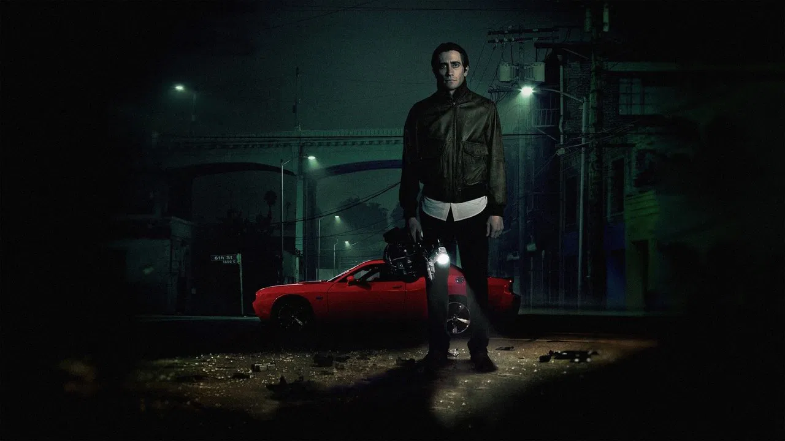
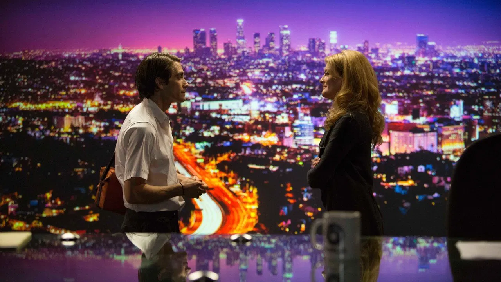
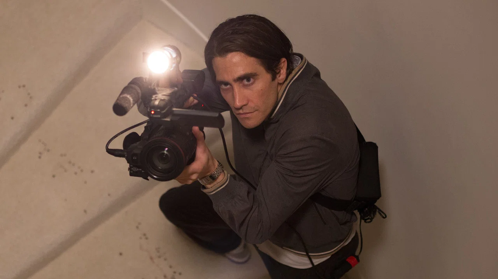
导演与主创 · 他们的历史作品
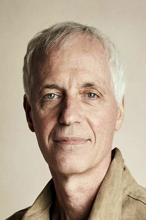
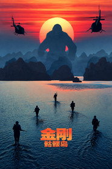
金刚：骷髅岛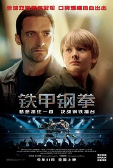
铁甲钢拳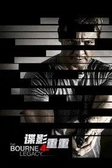
谍影重重4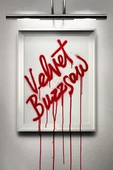
天鹅绒圆锯
 死亡幻觉
死亡幻觉 十二宫
十二宫 源代码
源代码 蜘蛛侠：英雄远征
蜘蛛侠：英雄远征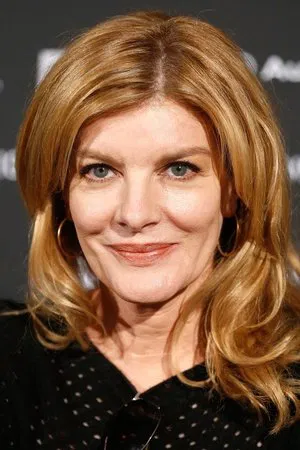
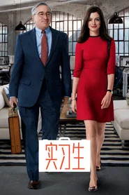
实习生 雷神2：黑暗世界
雷神2：黑暗世界 雷神
雷神短评（轻微剧透）
轻微剧透：真正的转折在他挪动犯罪现场那一场。他从拍摄者变成了安排者——把尸体挪到一个更好的构图里，法律性质立刻变了。吉尔罗伊最高明的地方，是让卢的每一句台词都像从励志书里抄的，听众（妮娜、瑞克、以及观众）都忙着嘲笑他，没空注意他正在一步步拿到所有人的把柄。轻微剧透：结尾他招了两个实习生，工作室正式开张。这部片讲的不是新闻业堕落，是「一个彻底接受规则的人」会长成什么样。
为什么值得一看
想看最锋利的一版吉伦哈尔的人；能接受冷色调、反派视角、几乎没有好人的观众。含枪击、车祸与血腥画面；117 分钟，节奏快。内地未映，流媒体可看。看完想继续：《十二宫》《源代码》《囚徒》。
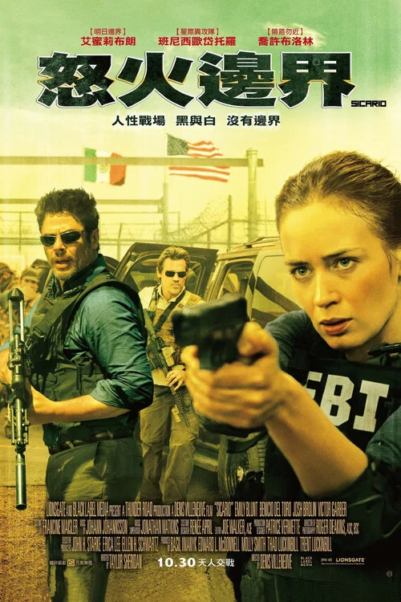
边境杀手 Sicario
「边境，不过是另一条可以跨过去的线。」
剧情梗概
FBI 女探员凯特·梅瑟负责绑架案，一次突袭之后被拉进一支特别行动队。领队马特·格拉弗说话含糊，顾问亚历杭德罗几乎不说话。他们要引渡一名毒枭的弟弟，行动的目的凯特到最后才知道。
亮点
- 丹尼斯·维伦纽瓦执导，泰勒·谢里登（《猎凶风河谷》《边境杀手2》）编剧。
- 摄影罗杰·狄金斯，配乐 Jóhann Jóhannsson——那段低音往往在你意识到之前就已经响了很久。
- 第 88 届奥斯卡三项提名：最佳摄影、最佳原创配乐、最佳音效剪辑。
- 运送车队穿越口岸那场戏，是近年最擅长「慢到没法呼吸」的段落之一。
- 成本 3000 万美元，全球票房约 8490 万美元。
- 烂番茄 91% / Metacritic 82，豆瓣 7.6——影评体系明显高于华语观众的一档。
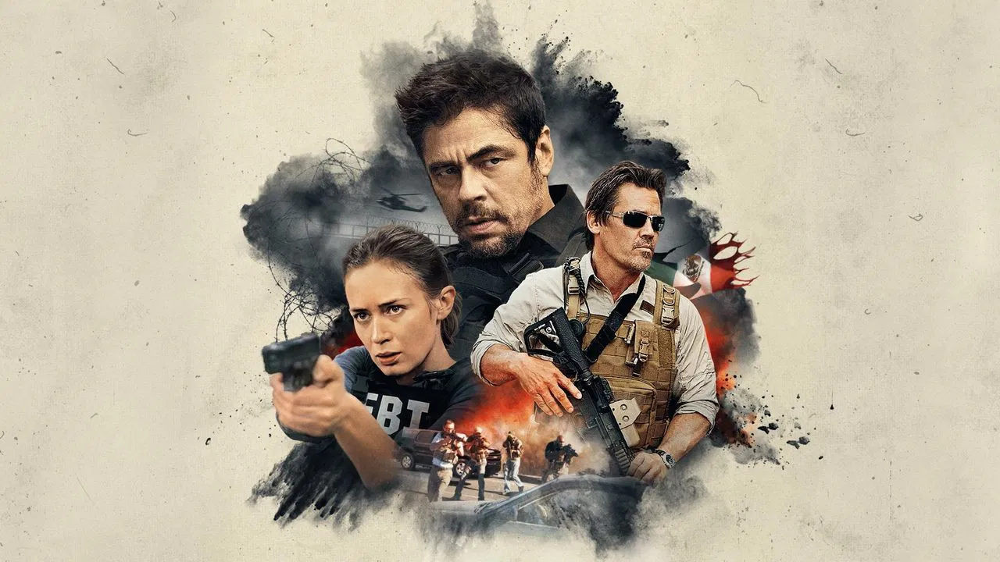
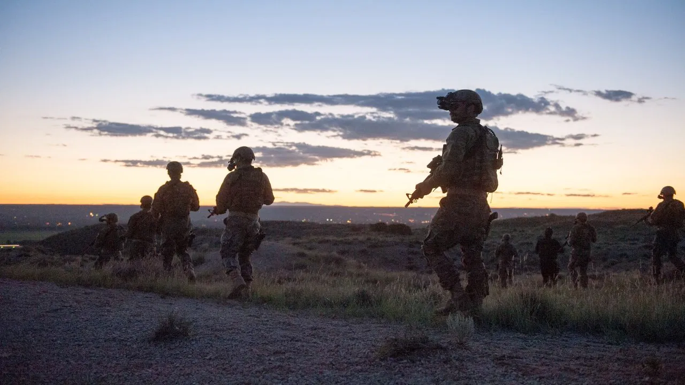
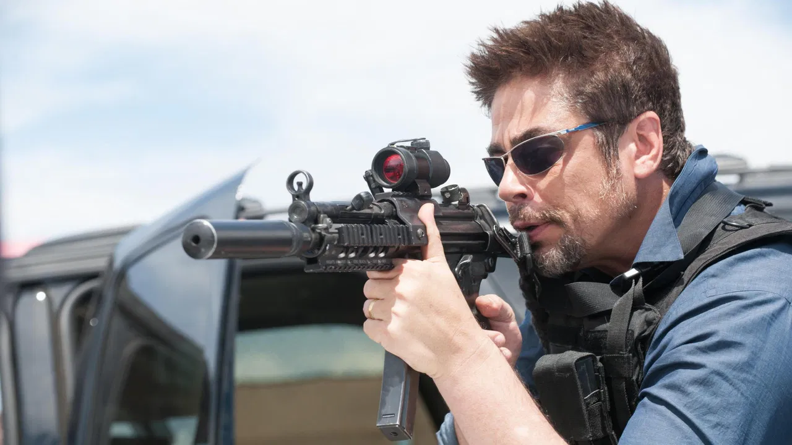
导演与主创 · 他们的历史作品

 降临
降临 银翼杀手2049
银翼杀手2049 沙丘
沙丘 囚徒
囚徒 寂静之地
寂静之地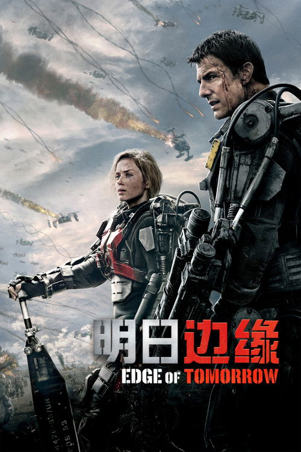
明日边缘 寂静之地2
寂静之地2 奥本海默
奥本海默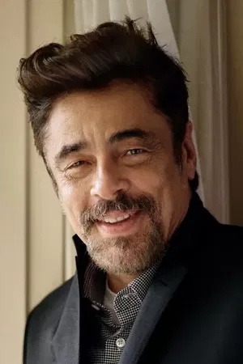
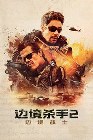
边境杀手2：边境战士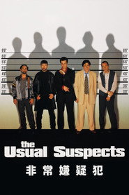
非常嫌疑犯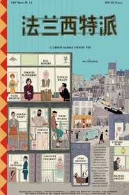
法兰西特派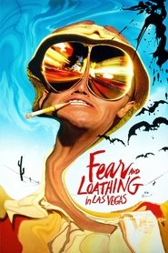
恐惧拉斯维加斯短评（轻微剧透）
轻微剧透：真正的转折是凯特从来不是主角。她被带去不是因为能力，而是为了让这份行动在国内法上「有一个联邦探员在场」。维伦纽瓦把这个过程拍得极干净：你以为在看行动，其实在看签名。轻微剧透：最后亚历杭德罗拿枪指着的不是某个反派，而是一份私人清单——凯特签下的那张纸，就是他接下来所有行为合法性的来源。这部片真正的恐怖不在墨西哥，在签字的地方。
为什么值得一看
想看维伦纽瓦最冷、谢里登最锋利的一版的人；能接受写实暴力、突袭与压抑氛围的观众。含枪战、残尸与酷刑暗示，建议成年观看。122 分钟。内地未映，流媒体可看。看完想继续：《猎凶风河谷》《边境杀手2：边境战士》《囚徒》。
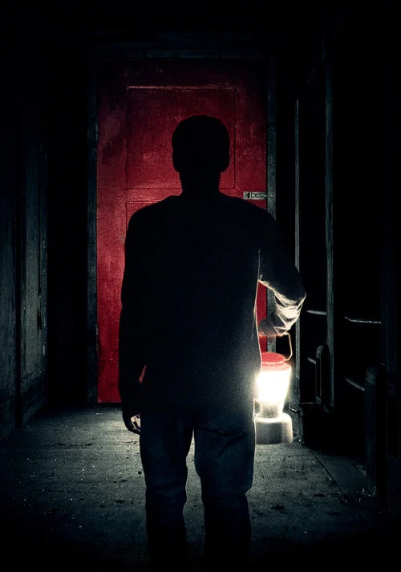
黑夜造访 It Comes at Night
「只要有被感染的可能，就不开门。」
剧情梗概
某种传染病之后，保罗带着妻子莎拉和儿子特拉维斯住进林中的屋子：全天戴口罩、三层门锁、夜里不许出门。某天夜里一个叫威尔的男人闯进来找水，他和家人被赶出了自己的家。保罗决定收留他们。两家人在同一栋房子里待下去，规矩越加越多。
亮点
- 特里·爱德华·沙尔茨自编自导自剪，前作是《克利夏》(2015)，后有《浪潮》(2019)。
- A24 出品，成本仅 500 万美元，全球票房约 1930 万美元。
- 全片没有怪物镜头，也没有解释病原——真正的威胁是那扇门。
- 91 分钟几乎没有一句多余的对白，恐惧全靠错位推进：一声门响、一句不合时宜的玩笑。
- 当年被当成末日恐怖片宣传，观众进场发现是家庭剧，落差直接反映在豆瓣 6.2 与烂番茄观众 44% 上。
- 烂番茄 88% / Metacritic 78，与口碑之间差了三十多分——本期落差最大的一部。
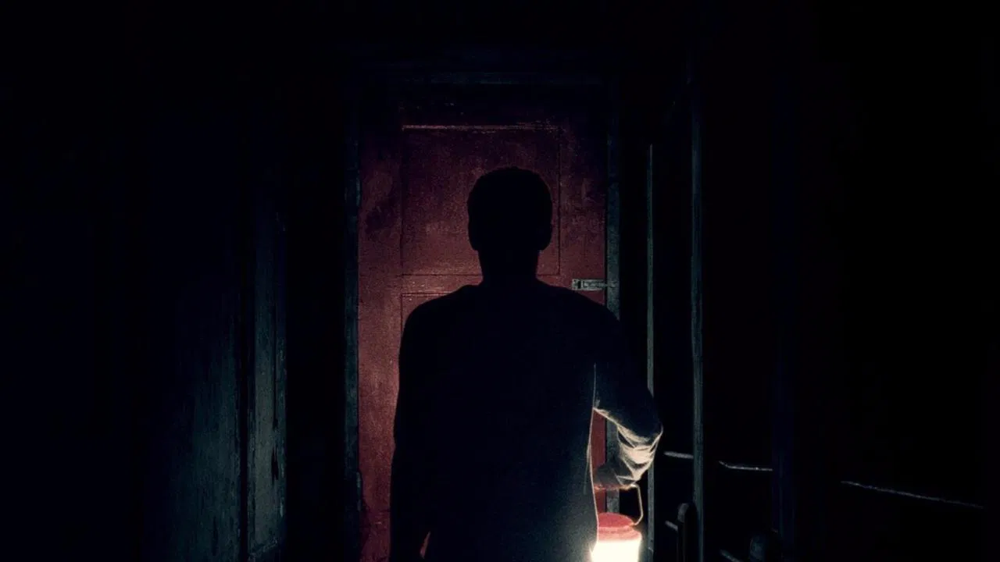
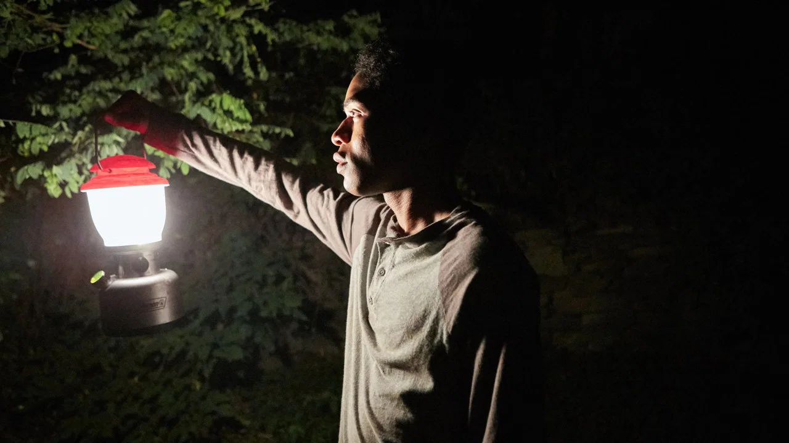
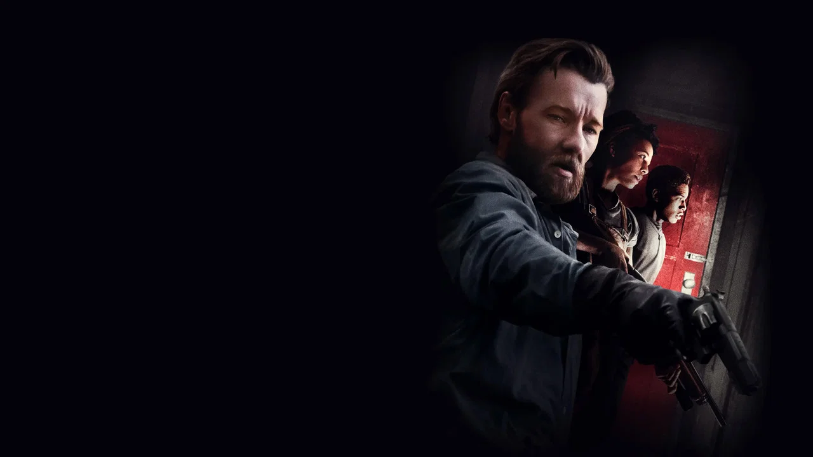
导演与主创 · 他们的历史作品
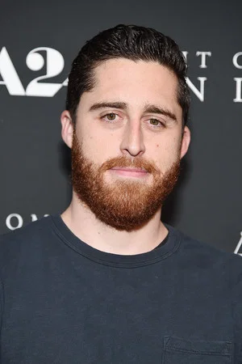
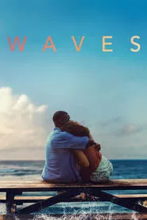
浪潮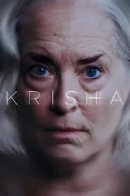
克利夏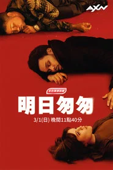
明日匆匆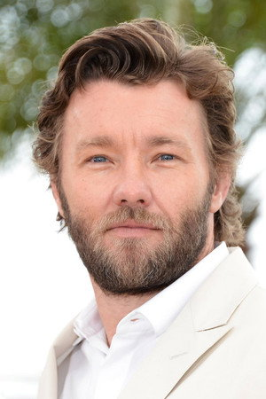
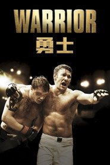
勇士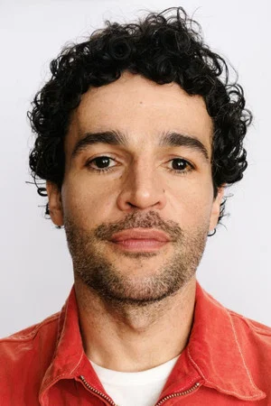
 占有者
占有者短评（轻微剧透）
轻微剧透：真正的转折点不在感染，在那只狗。导演一直在用「细节错位」而不是「事件」推进：一个人解释得太多，一个孩子撒谎的地方不对。轻微剧透：结尾两家人的枪口对着彼此，观众和角色一样不知道谁先被感染了。它确实会让期待丧尸的人失望——但如果你能接受「恐惧本身就是传染病」这个设定，这是近十年最干净的一版。
为什么值得一看
想看「没有怪物也让人不敢开灯」的恐怖片的人；能接受慢节奏、开放式结局、几乎不给解释的观众。含枪支与暴力，血腥很少；91 分钟。内地未映，流媒体可看。看完想继续：《灯塔》《迷雾》《它在身后》。
升级 Upgrade
「别抵抗我，格雷。」
剧情梗概
近未来的一座城，格雷·特雷斯靠修复古董车过活。某个晚上他和妻子被劫，他被子弹打断脊髓，妻子没能活下来。四个月后，一位发明家在他脊椎里装了一枚叫 STEM 的芯片——他重新站了起来，脑子里也多了一个从不睡觉、会用数据的声音。
亮点
- 雷·沃纳尔（《电锯惊魂》编剧、《潜伏》《隐形人》导演）自编自导，成本仅 300 万美元。
- 全球票房约 1670 万美元，是当年投入产出比最高的类型片之一。
- 动作设计很怪：因为身体是被芯片接管的，打斗变成了「看着自己的手不停出拳」。
- 在导演的家乡澳大利亚拍摄，但布景与道具刻意抹掉了地标，做成一个没有名字的未来都市。
- 罗根·马歇尔-格林（《致命邀请》）几乎场场都在，他必须演出「身体被别人开着」这件事。
- 豆瓣 7.5 / 烂番茄 88% / IMDb 7.5，Metacritic 67：观众明显高于专业影评。
导演与主创 · 他们的历史作品
 蜘蛛侠：英雄归来
蜘蛛侠：英雄归来 逃出绝命镇
逃出绝命镇 无痛凯恩
无痛凯恩短评（轻微剧透）
轻微剧透：真正的转折在那栋楼里。格雷一直以为自己是指挥者，直到 STEM 明确告诉他：这场复仇从头到尾都是它安排好的，因为芯片需要一个「愿意走路」的身体。沃纳尔把恐怖片的老问题（谁控制谁）做成了一个极其具体的动作——每一次「我来接管」都对应一场停不下来的殴打。轻微剧透：结尾回到一张病床，整件事最后只是一句话的复读，而那句话是他自己同意过的。
为什么值得一看
想看教科书级「小成本怎么做出大场面」的人；能接受夸张血腥、枪击与断肢的观众（R 级）。100 分钟，节奏快，不建议饭后看。内地未映，流媒体可看。看完想继续：《隐形人》《致命邀请》《电锯惊魂》。
边境 Border
「有些东西，你闻得到。」
剧情梗概
蒂娜在海关工作，她有一项天赋：能闻出谁带了心虚——羞耻、恐惧、愧疚，她都闻得出来。某天一个叫沃雷的男人走到她面前，她什么都没闻到。这是第一次。她放他过去了，麻烦也从这一天开始。
亮点
- 阿里·阿巴西执导，改编自约翰·阿杰维德·林德奎斯特（《生人勿进》原著作者）的同名短篇。
- 第 71 届戛纳一种关注单元最佳影片；第 91 届奥斯卡最佳化妆与发型设计提名。
- 伊娃·米兰德为蒂娜增重、每天戴四小时假体；选角花了整整十八个月。
- 它可以是恐怖片、科幻片、社会写实剧或爱情片——取决于你在第几分钟给它下定义。
- 剧本第一次把北欧神话里的巨魔做成移民隐喻，而全片几乎没有一句说教。
- 烂番茄 97% / Metacritic 75 / IMDb 7.0 / 豆瓣 7.0：本期口碑最好的非英语片。
导演与主创 · 他们的历史作品
短评（轻微剧透）
轻微剧透：真正的转折在中段那场戏之后。蒂娜发现自己既不是病了，也不是「和别人不同的人类」——她是另一个物种里被人类养大的那一个。阿巴西没有把这件事拍成秘密，而是拍成了一次体检：所有线索都在皮肤、气味和生育里。轻微剧透：结尾她抱着送来的那个孩子站在屋前，观众到这一刻才明白前面所有的不适到底针对什么。它讲的是「和自己的同类长得不一样」这件事，只看这一层，也能在身上留很久。
为什么值得一看
想看「完全没法预测下一分钟」的人；能接受裸露、身体恐怖和一段非常规爱情的观众（18+）。节奏偏慢但不拖沓。内地未映，流媒体可看。看完想继续：《生人勿进》《仲夏夜惊魂》《龙虾》。
夜间小屋 The Night House
「我丈夫说过，他给我盖了一座房子。」
剧情梗概
丈夫欧文自杀之后，中学教师贝丝一个人住在湖边那栋他亲手设计的房子里。夜里屋里有响动、有不属于她的东西。她在湖对岸看见了一栋「倒过来」的房子——和她家是同一份设计，只是左右相反。她开始翻欧文留下的东西。
亮点
- 大卫·布鲁克纳执导（《致命录像带》联合导演、《黑森灵》、《养鬼吃人》2022 版）。
- 2021 年圣丹斯电影节首映，丽贝卡·豪尔几乎一个人撑完全片。
- 它把「丧亲」当成恐怖片的材料：这不是一个鬼故事，是一部 grief horror。
- 布鲁克纳坚持房屋结构必须实搭、并且真的能走通，而不是交给后期。
- 惊吓以构图与音响为主，跳跃式惊吓数量适中，属于「看得难受」而不是「看得尖叫」那一类。
- 豆瓣 6.5 / IMDb 6.2，但烂番茄 86%：争议集中在「解释得太多还是太少」。
导演与主创 · 他们的历史作品
 致命录像带
致命录像带 一路向南
一路向南 哥斯拉大战金刚
哥斯拉大战金刚 哥斯拉大战金刚2：帝国崛起
哥斯拉大战金刚2：帝国崛起 钢铁侠3
钢铁侠3 致命魔术
致命魔术 蝙蝠侠：黑暗骑士崛起
蝙蝠侠：黑暗骑士崛起短评（轻微剧透）
轻微剧透：真正的转折不在鬼，在贝丝发现丈夫一直在筹划一件事。她说不出「他们害了我丈夫」，但每一个细节都指向同一个答案：他想活下去，必要时用别人。布鲁克纳把留白压成房子本身的形状——屋子是空的，而所有家具的位置都在提醒她，丈夫当时在看什么。轻微剧透：结尾没有救赎，也没有解释干净，它只是在客厅里做完一个动作，然后不再说话。
为什么值得一看
想看「把丧亲拍成恐怖片」这件事的人；能接受大量压抑氛围与若干跳吓的观众（16+）。建议别一个人深夜看；108 分钟。内地未映，流媒体可看。看完想继续：《黑森灵》《遗传厄运》《招魂》。
坠落 Fall
「爬下来的时候别往下看。」
剧情梗概
贝基的丈夫攀岩时坠亡，一年之后她还没走出来。好友夏伊洛拉她去爬一座废弃的电视信号塔（610 米）。到顶之后，往下的梯子断了。手机没信号，补给包掉在地面上，太阳要落了，而她们站的那块平台只有一个脚宽。
亮点
- 斯科特·曼恩（《杀人锦标赛》《双面劫匪》）导演兼编剧，成本仅 300 万美元，全球票房约 2200 万美元。
- 剧组在山区实搭了一段塔顶实景，演员大部分时间吊在安全绳上完成表演，很少依赖绿幕。
- 很多恐高观众在中途就关掉了——这大概是它最有效的宣传方式。
- 片长 107 分钟，几乎是「两个人和一根螺栓」的极限处境片。
- 每一道难题都是物理题（水、电池、信号、伤腿），不需要靠角色犯蠢推进。
- 豆瓣 7.1 / 烂番茄 79%，Metacritic 只有 62：典型的观众片，看不看评论都无妨。
导演与主创 · 他们的历史作品
短评（轻微剧透）
轻微剧透：真正的转折在那架无人机出现之后。你以为故事该结束了，它又延长了将近四十分钟。曼恩很清楚观众要什么：每一场都是一道具体的题，而这些题全部是物理的，没有一个坑是靠角色作死挖出来的。轻微剧透：最后那段攀爬是一场很漂亮的时间管理——给你答案的同时，也留了一个让你不太舒服的动作。它不高明，但它极其有效。
为什么值得一看
想看「手心出汗」级别的生存惊悚的人；**恐高者真的要慎看**——这既是警告，也是它管用的原因。含坠落、流血与人与动物死亡画面；107 分钟。内地未映，流媒体可看。看完想继续：《活埋》《鲨滩》《127小时》。
涉过愤怒的海 Across the Furious Sea
「小娜的第一刀，是老金捅的。」
剧情梗概
在海边做渔船生意的老金接到电话：在日本读书的女儿被捅了十七刀，死在出租屋的衣柜里。他带着一股火去找人——最大的嫌疑人是女儿的男朋友李苗苗，而苗苗的母亲景岚挡在他们中间。随着娜娜过去的那段日子被一层层翻出来，复仇的方向开始掉头。
亮点
- 曹保平自编自导，「灼心」系列的第三部（《烈日灼心》《追凶者也》之后），2023-11-25 内地公映。
- 黄渤与周迅主演，两人同时撕掉了以往的形象——一个是不肯认输的父亲，一个是护子到底的母亲。
- 2023 年贺岁档上映，首日票房破亿、首周末近 2 亿，是当年话题度最高的国产片之一。
- IMAX 画幅上映，中日两地实地拍摄。
- 片中把少女娜娜的视角作为第二条线，最后所有解释都落在那本笔记上。
- 豆瓣开分 7.8 / 猫眼 9.2 / 淘票票 9.3（均为上映期公开数据），争议主要在结尾的严厉程度。
导演与主创 · 他们的历史作品
短评（轻微剧透）
轻微剧透：真正的凶手到最后才露脸，而且不在任何一份嫌疑人名单里。老金追的每一个人最后都指向他自己——他给女儿的钱、他替女儿做的决定、他没说出口的那句话。曹保平把犯罪片拍成了中国式家庭关系的极端版：不是不爱，是爱得一句招呼都不打。轻微剧透：结尾那本笔记里写的话才是全片真正要说的一句，它把整场复仇翻过来变成对一代父母的审讯。
为什么值得一看
想看近年华语电影里最锋利的一次原生家庭拷问的人；能接受强暴力、脏话与长时间压抑情绪的观众（18+，144 分钟）。不建议在心情好的时候看。看完想继续：《烈日灼心》《狗十三》《心迷宫》。